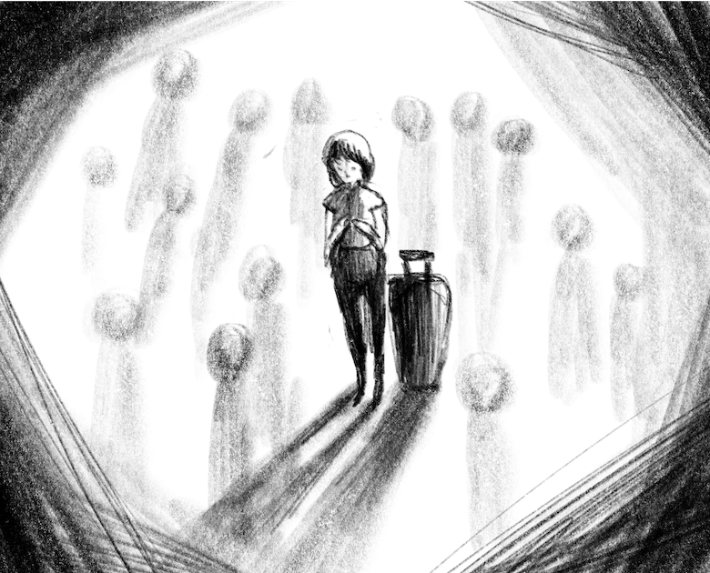

She is walking in a hurry as she is going to be late for her flight. She needs to walk faster to the bus station, to the bus that will take her to the airport. The street is very crowded, and the people are blocking her way. Her luggage is heavy, and she can't walk faster. It is a hot summer day, and she is sweating. As she begins to wipe the sweat on her neck with a handkerchief, she notices something is not correct. She stops walking and touches her neck; she can feel her sticky neck sweat and realises her necklace is missing. She is in shock and starts looking for it in her clothes, her pockets and on the floor. She realises it is gone, and she stands still in the middle of the busy streets.
“What should I do?” Mie asks herself. She has a flight to catch and a necklace to look for. She decides she needs to look for the chain. Mie starts walking back, along the route she walks with her heavy luggage. On the way, she keeps looking at the floor to sees if her necklace is on the ground. The streets are very crowded, and it is challenging to have a clear look on the floor with all the pedestrians’ feet walking. After one hour of careful searching, she has reached the hotel she has just checked out of. And she immediately goes to the front desk to ask about the room she has just left and if she has left a necklace in the room. The front desk assistant tells Mie to take a seat and wait for the update from housekeeping while they check the room.
Mie is sitting in the lobby of the hotel. She is distraught; she keeps blaming herself for being so careless to lose her necklace. “Where did I leave it? I wore it every morning! Did I wear it this morning, or did I forget? It must have been in the hotel room. I have looked everywhere in the streets, all along the way.” Mie is very upset, and her eyes are starting to be filled with tears.
One month ago, on Mie’s 50th birthday, the necklace was gifted to her by her son, who was just accepted for college. Her son left town the week after to stay at the college campus. This was the last birthday celebration together. Mie is a single mother, and she has to work two jobs to support her son and herself. The bond between Mie and her son is solid, for they have a very close relationship. They share every secret and every detail of their lives. They both know they are going to miss each other. “Mom, I will be going to college, and I will work part-time, so you won’t have to take two jobs. And after I graduate, I will make sure I will become a successful doctor and very soon I will buy us a big house”. Mie was emotional as she looked at her son, who turned into a young adult and felt glad that son had grown so much. At that moment, her son gave her a box, “Mother, this is a birthday gift for you.” Mie took the box from her son and opened it; it was a gold-coloured necklace. It was a simple chain, but it sparkled under the lights of the house. “I will buy you a real gold necklace after I graduate,” Mie knew at that moment that his son was the best gift from God.
Only one month after her 50th birthday celebration, she received a phone call from her son’s school. Bad news came from the phone call. Mie was told that her son has been killed in a car accident. It was a hit and run. The driver drove away and is still not caught. It was suspected to be a drunk driver. But the police still do not have the suspect. Mie was told to visit the school to collect her son’s belongings. Mie hung up the phone and immediately booked her flight to the city of her son’s school. Mie lives in the countryside, and multiple flights are needed to reach the province of her son’s school.
The fastest available flight was the next day and needed a layover in another city for another flight to the destination. So she booked a cheap city hotel for that night.
Mie is now sitting in that cheap city hotel lobby, waiting for the front desk to call her. She hopes that the housekeeping has found her necklace, the necklace her son gave her on her birthday. She recalls memories of her birthday, the moment when her son gave her the chain, and suddenly now her son is gone, killed by someone who has not been arrested.
Moments go by, and there is still no news from the front desk. Mie’s phone rings, it is from an unknown number. “Hello?” a familiar voice says, “Mom! It’s me, I’m not killed, the school has mistaken me with another student.”, Mie is confused and lost. Her son then tells her that he was seriously injured in the hospital with his classmate. His classmate has passed away, but he is fine.
Mie is happy and upset at the same time. She is so pleased that her son did not die but very upset that she has missed her flight because she is stubborn enough to find the necklace while she can have just made a phone call to the hotel. Upset that she has spent a fortune for the aeroplane tickets and accommodation, but happy that someone else’s son died instead of her son. She feels awful and complicated. She does not know what to think anymore.
Mie thinks finding the necklace represents finding her son back. But now, she realises that nothing is essential as long as her son is alive.